🗺️ Mes leçons de géographie
25 leçons illustrées · Périodes 1 à 5 · Sans exercices
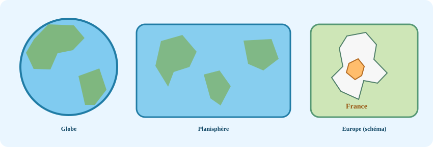
P1 · GEOG-P1-01Localiser la France à différentes échelles
Se repérer en France →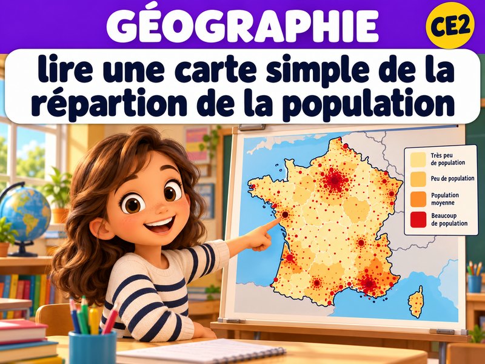
P1 · GEOG-P1-02Lire une carte simple de répartition de la population
Se repérer en France →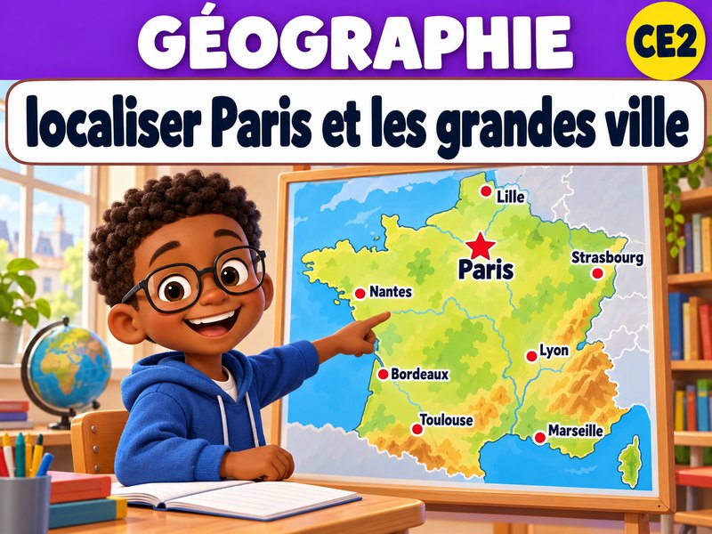
P1 · GEOG-P1-03Localiser Paris et quelques grandes villes françaises
Se repérer en France →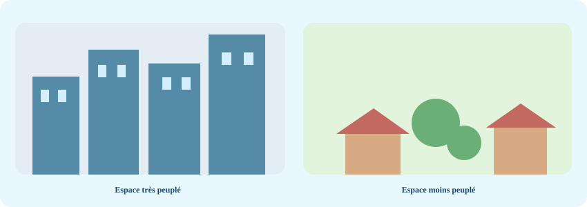
P1 · GEOG-P1-04Identifier et comparer des espaces plus ou moins peuplés
Se repérer en France →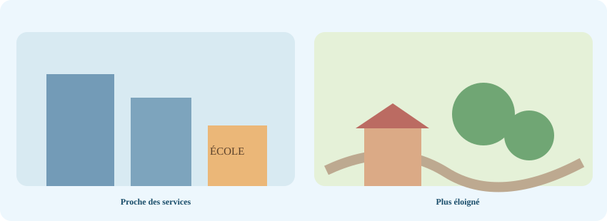
P1 · GEOG-P1-05Proposer une explication simple à une différence de peuplement
Se repérer en France →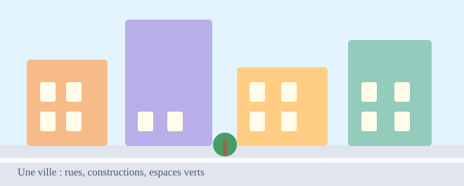
P2 · GEOG-P2-01Reconnaître et décrire un paysage urbain
Habiter en ville →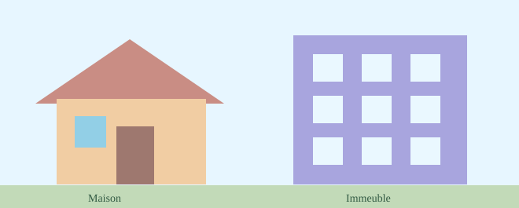
P2 · GEOG-P2-02Distinguer différentes formes d’habitat
Habiter en ville →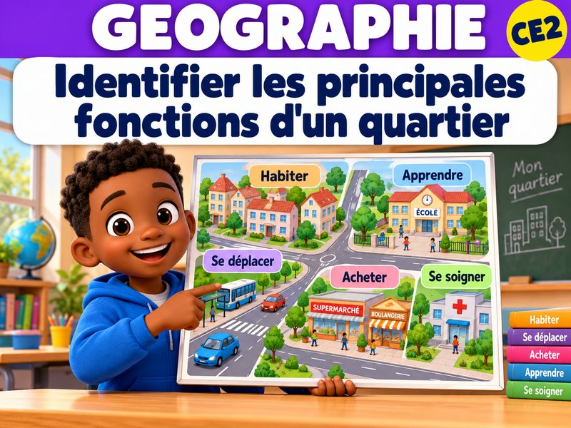
P2 · GEOG-P2-03Identifier les principales fonctions d’un quartier
Habiter en ville →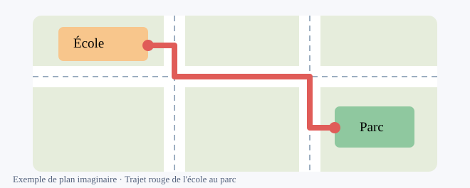
P2 · GEOG-P2-04Utiliser un plan pour localiser un lieu et suivre un trajet
Habiter en ville →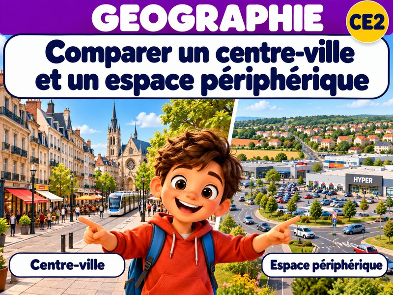
P2 · GEOG-P2-05Comparer un centre-ville et un espace périphérique
Habiter en ville →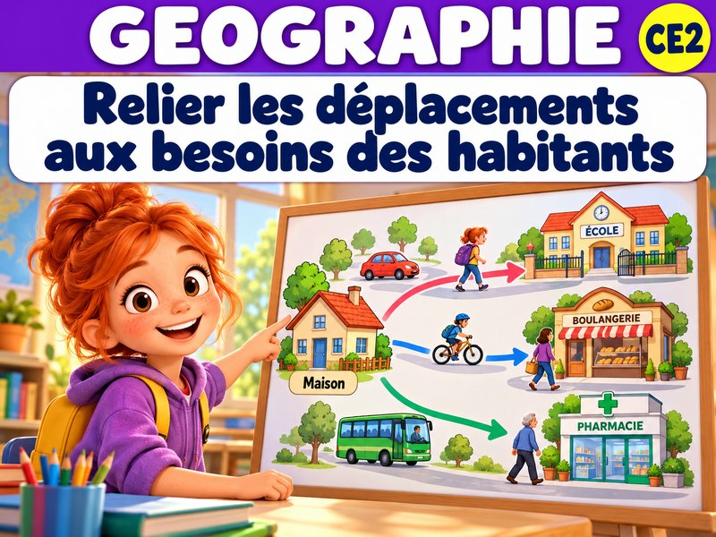
P2 · GEOG-P2-06Relier les déplacements et les aménagements aux besoins des habitants
Habiter en ville →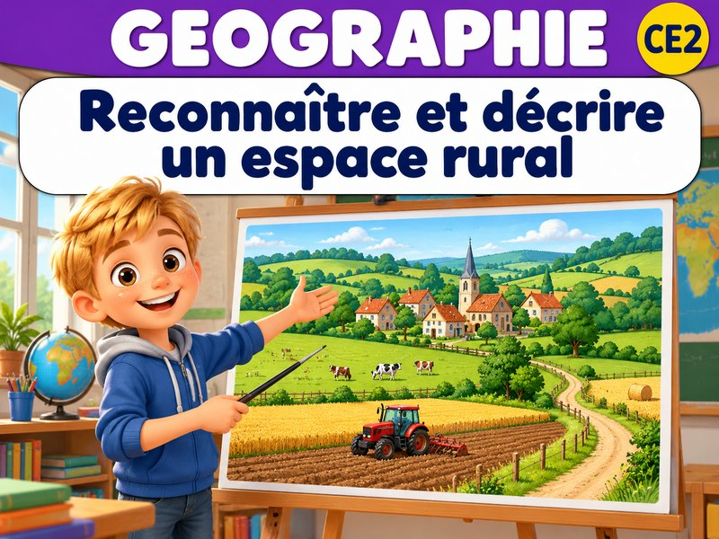
P3 · GEOG-P3-01Reconnaître et décrire un espace rural
Habiter différents espaces → P3 · GEOG-P3-02
P3 · GEOG-P3-02Décrire différentes façons d’habiter un littoral ou la montagne
Habiter différents espaces →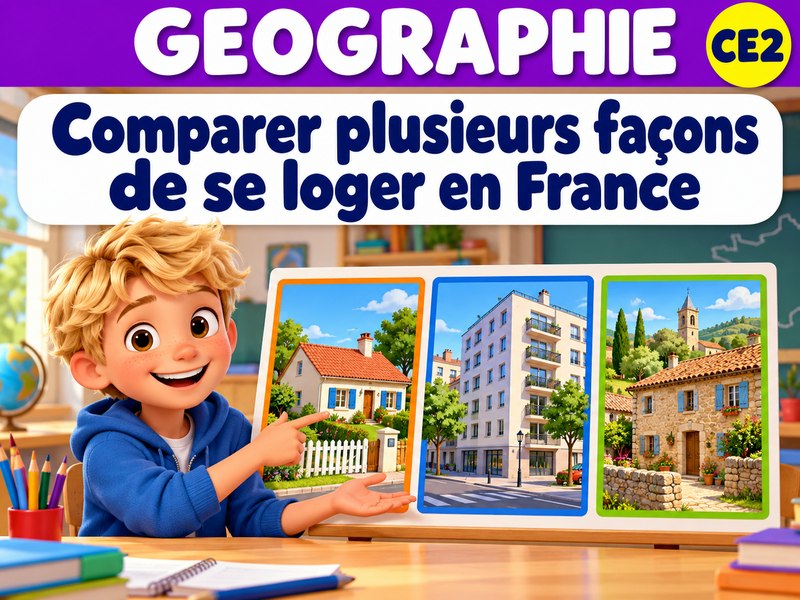
P3 · GEOG-P3-03Comparer plusieurs façons de se loger en France
Habiter différents espaces → P3 · GEOG-P3-04
P3 · GEOG-P3-04Comparer l’accès aux services selon le lieu de vie
Habiter différents espaces →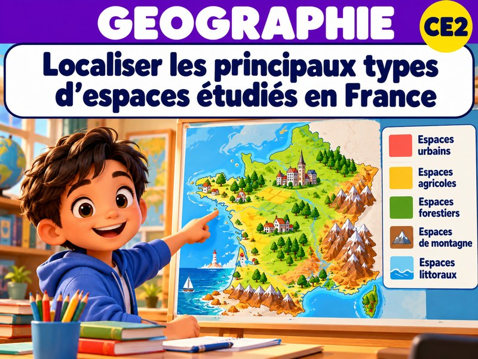
P3 · GEOG-P3-05Localiser les principaux types d’espaces étudiés en France
Habiter différents espaces →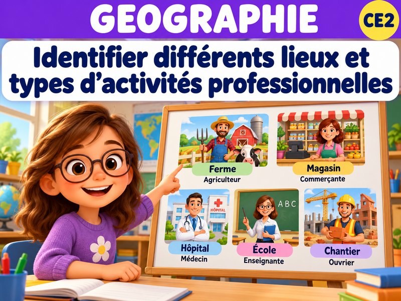
P4 · GEOG-P4-01Identifier différents lieux et types d’activités professionnelles
Travailler dans différents espaces →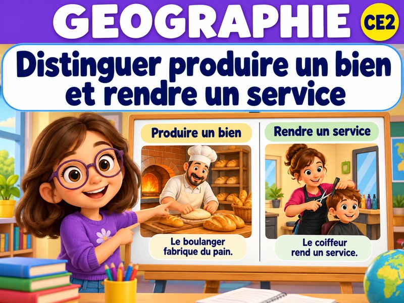
P4 · GEOG-P4-02Distinguer produire un bien et rendre un service
Travailler dans différents espaces →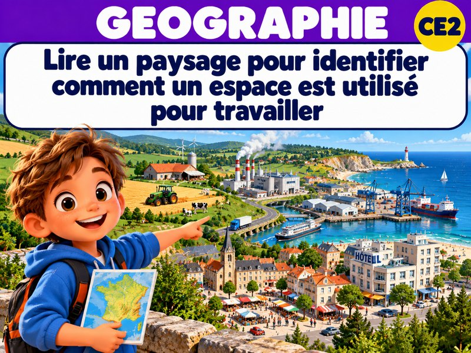
P4 · GEOG-P4-03Lire un paysage pour identifier comment un espace est utilisé pour travailler
Travailler dans différents espaces →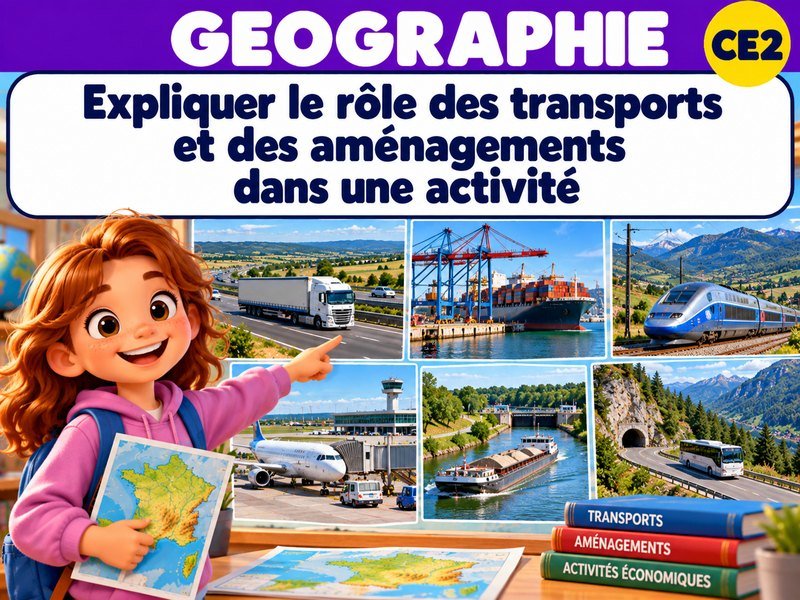
P4 · GEOG-P4-04Expliquer le rôle des transports et des aménagements dans une activité
Travailler dans différents espaces → P5 · GEOG-P5-01
P5 · GEOG-P5-01Décrire un espace agricole ou touristique
Activités et territoires → P5 · GEOG-P5-02
P5 · GEOG-P5-02Reconstituer le parcours simple d’un produit
Activités et territoires → P5 · GEOG-P5-03
P5 · GEOG-P5-03Identifier différentes activités et services d’un territoire
Activités et territoires → P5 · GEOG-P5-04
P5 · GEOG-P5-04Repérer les effets d’une activité sur un territoire et son environnement
Activités et territoires → P5 · GEOG-P5-05
P5 · GEOG-P5-05Comparer plusieurs espaces de travail en France
Activités et territoires →Aucune leçon trouvée. Essaie un autre mot ou une autre période.